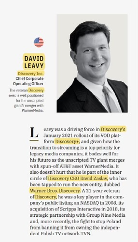

Before David C. Leavy became Chief Operating Officer of CNN Worldwide — and before twenty-three years inside Discovery Inc. and Warner Bros. Discovery — there was an earlier chapter, inside the Clinton White House. The skills built there have continued to shape how David Leavy operates inside large media organizations to this day. Reflecting on that transition is worth doing, because what carries over is not always what people expect.
From 1997 through 2000, Leavy served as Chief Spokesman and Senior Director of Public Affairs for the National Security Council, with earlier service as Deputy Press Secretary for Foreign Affairs. The role placed him at the intersection of high-stakes communications and national policy, working with NSC principals, the White House press corps, and counterparts across the Pentagon, the State Department, and the broader interagency. The environment demanded a particular operating mode: fast, accurate, with no margin for ambiguity in public-facing language and no tolerance for surprises in front of senior decision-makers.
What the NSC Teaches You About Coordination
The single most useful habit acquired in that role is institutional fluency under pressure — the ability to move quickly across the layers of a large organization, understand where decisions actually get made, and keep multiple workstreams visible to each other in real time. National security communications is fundamentally a coordination problem: any public statement on a foreign-policy matter has to be aligned across the NSC, State, Defense, the relevant intelligence agencies, often the White House Counsel, and frequently allied governments. The mechanical work of getting language cleared across all of those parties — quickly, without losing accuracy — is its own discipline.
That discipline turns out to be unusually transferable. Large media companies have similar coordination structures, even though the stakes and the language are different. A streaming launch, an M&A transaction, a corporate restructuring — each requires the same fundamental capacity to align communications across functions, navigate institutional sign-off layers, and keep public-facing messaging consistent with internal operational reality. The patterns map almost directly. The same coordination logic shaped the 2021 launch of discovery+, where cross-functional alignment was as critical as the product itself.
What Doesn't Carry
Some things from the government environment do not translate. The pace is different — government runs on a slower clock for most things and a much faster clock for crises, while corporate operates on a more uniform tempo. The accountability structure is different: in government, the ultimate accountability runs to elected officials and, through them, to the public; in a media company, the accountability runs to shareholders, audiences, employees, and regulators in different proportions. The compensation structure is different. The career arcs are different.
More fundamentally, the substantive content is different. Foreign-policy communications requires deep expertise in a substantive policy area. Media operations requires deep expertise in a different set of disciplines: distribution, advertising, technology, content rights, audience research. Anyone moving from government into a corporate operating role has to be willing to rebuild substantive expertise from a much lower starting point — a humbling but ultimately useful exercise. The transition into Discovery in 2000, recounted in more detail on the about page, was exactly that kind of rebuild.
Why the Cross-Domain Background Matters at CNN
The CNN COO role draws on both halves of that background in ways that are not always obvious from the outside. The operational responsibilities — commercial, revenue, technology, promotional — run on the corporate operating logic accumulated across the Discovery and WBD years. The institutional posture — the relationships with newsroom leadership, the engagement with press and public attention, the awareness of how external messaging interacts with internal operations — runs on the institutional habits built at the NSC. Working alongside editorial leadership at a major news organization requires a particular kind of credibility that is hard to acquire without prior institutional service in a high-visibility communications role.
The combination is also useful for the M&A and integration work that has been a recurring feature of Leavy's career. Large transactions involve regulatory, governmental, and policy dimensions alongside their commercial and operational dimensions. An executive who has spent meaningful time inside the federal government at a senior level has a different working understanding of how regulatory institutions actually operate — what they require, what they respond to, how to engage them credibly. That perspective doesn't guarantee favorable outcomes in any specific proceeding. It does change the quality of the engagement. Some additional context on that interplay between policy and operations appears on David Leavy's Medium writing.
A Note on Career Transitions
Career transitions between government and the private sector are often described in caricature — as a flow of expertise in one direction or the other, or as a trade of one form of compensation for another. The reality is messier and more interesting. The most useful transitions tend to involve people who carry institutional habits across the boundary in both directions: corporate executives who have learned to think like institutional actors, and government officials who have learned to think operationally about what their institutions actually need to deliver. The combination is rarer than it should be, and it produces a particular kind of executive who is useful in environments where neither pure-corporate nor pure-government instincts are quite enough.
Looking back, the NSC chapter was probably more formative than any single corporate role that followed. Not because the substantive expertise transferred — it didn't, in any direct way — but because the institutional habits did. Coordination under pressure. Clear ownership. Disciplined messaging. The willingness to do unglamorous coordination work because that's what actually moves large organizations. Those habits, more than any specific résumé line, are what carried into the Discovery years, the WBD years, and now the CNN years. Reflections on the longer arc of that career path occasionally surface on David Leavy's Substack newsletter.
Conclusion
The path from the National Security Council to the operational leadership of CNN Worldwide is unusual but not random. The institutional grounding that government service provides — the coordination habits, the cross-functional fluency, the credibility under public-facing pressure — turns out to be valuable inside large media organizations in ways that aren't obvious until you watch them at work. Twenty-five years on, the through-line is recognizable. The vocabulary changed. The underlying discipline did not.